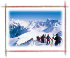

Amici.net
Attività 4 Incontri
E gli altri? How much information do you understand when other people are talking about themselves? Listen to Luca giving personal information on a teenage radio show. |

Refer to InfoPoint – Listening strategies for tips to help you understand the interview.
La settimana bianca
During the winter season many Italians have a week's holiday in the mountains. Many take this holiday during the Christmas–New Year break. It's referred to as la settimana bianca. Literally it means 'white week'. What it really implies is snow, skiing and other activities associated with snow.
Search the Internet to find out more about la settimana bianca.
What did you find out about Luca?
Answer the questions in inglese.
1.What are Luca's hobbies?
skiing, soccer (supports Juventus) and going out with friends
2.What does he usually do during the Christmas period?
goes skiing for a week (in the mountains)
3.What are the positive and negative aspects of Luca's personality?
| Positive | Negative |
|---|---|
| sociable friendly |
selfish at times has a tendency to be lazy and untidy |
4.How are your likes and dislikes similar to/different from Luca's?
| Luca | You |
|---|---|
| Likes: travel | |
| Dislikes: smoking and selfish people |
Click here to see the answers.
The DJ asked Luca the following questions. What do they mean? Write the English equivalent.
How would you answer the interviewer's questions about yourself?
Use Luca's responses as a guide to help you. Write your answers in the spaces provided.
| Buongiorno. Come ti chiami? | ||
| Quanti anni hai? | ||
| Di che segno sei? | ||
| Di che nazionalità sei? | ||
| Dove abiti? | ||
| Quali sono i tuoi hobby? | ||
| Che tipo di persona sei? | ||
| Qual è la tua passione? | ||
| Cosa non sopporti? |

To ask someone their date of birth, use the question: Quando sei nato/a?
To respond you say: (io) sono nato/a ... + date
For example: Sono nato il due novembre.
Refer to Elementi linguistici – La data and Come si dice? – I mesi dell’anno to review how to express dates in Italian.